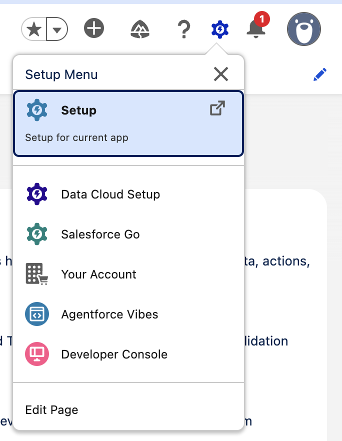
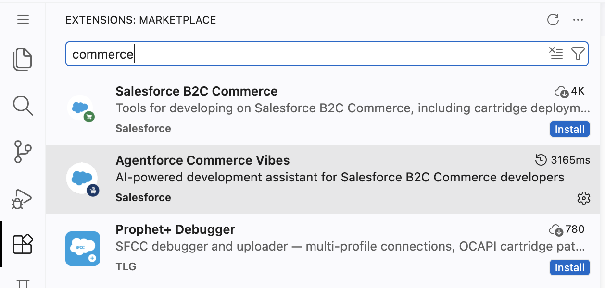
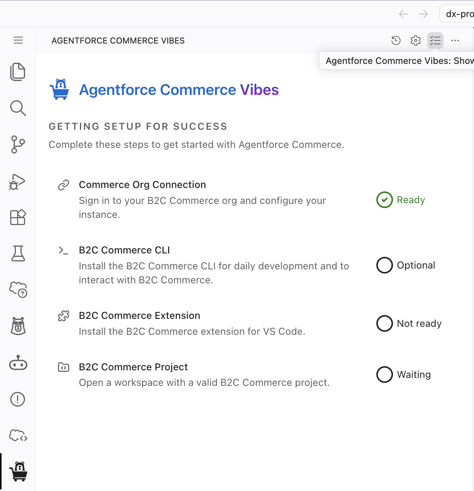
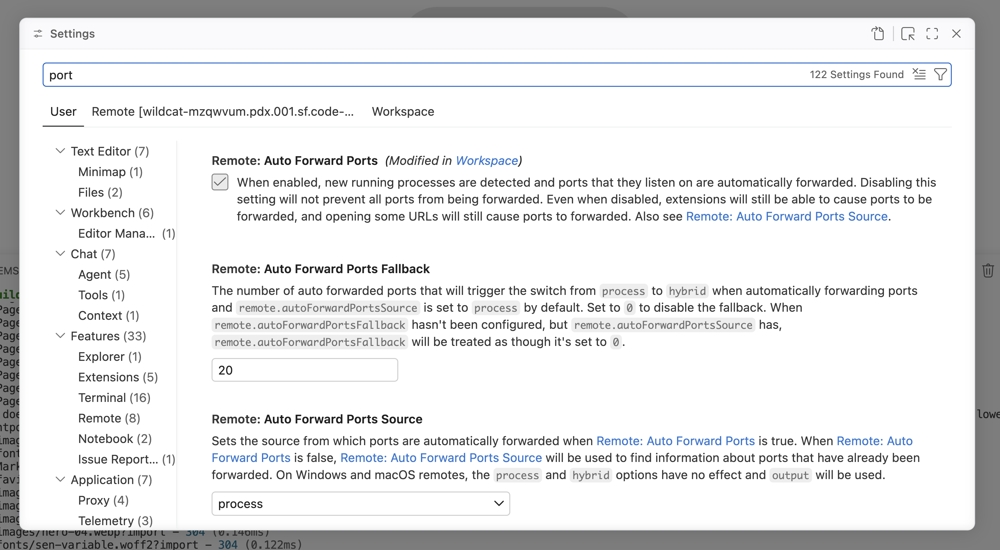
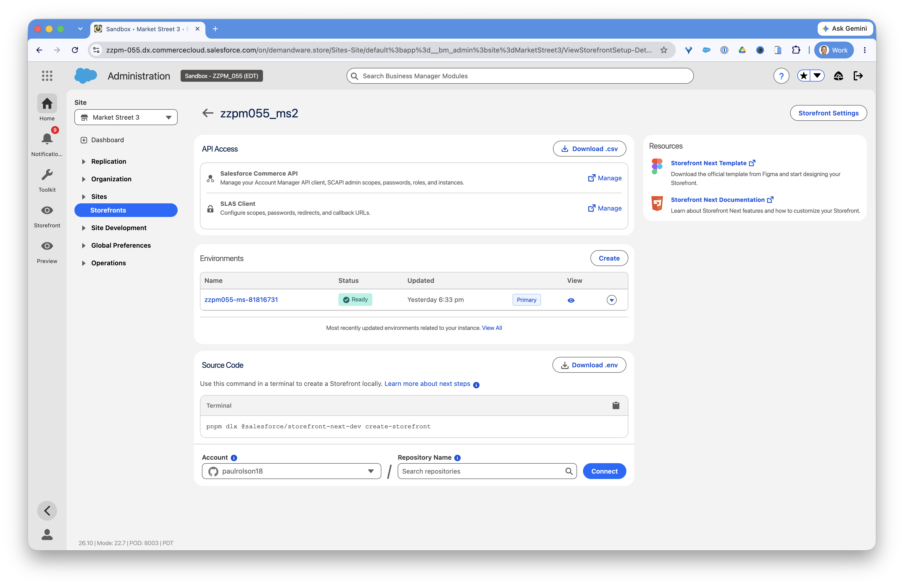

Launch a Storefront Next
Site Workshop
2026 Workshop — B2C201
Two paths — pick the one that fits your setup
📋 Workshop Agenda — 60 Minutes
| Time | Min | Activity | Exercise | Type |
|---|---|---|---|---|
| 0:00–0:06 | 6 | Verify software & AI tool installation | Ex 1 | Setup |
| 0:06–0:16 | 10 | Storefront Next introduction & overview | Ex 2 | Presentation |
| 0:16–0:21 | 5 | Download env config; review storefront creation & deployment | Ex 3 | Hands-on |
| 0:21–0:31 | 10 | Create project, copy .env, install, start dev server | Ex 4 | Hands-on |
| 0:31–0:35 | 4 | Guided tour of project structure & config | Ex 5 | Hands-on |
| 0:35–0:44 | 9 | Update theme, logo, add custom page | Ex 6 | Hands-on |
| 0:44–0:49 | 5 | Add personalized welcome banner | Ex 7 | Hands-on |
| 0:49–0:55 | 6 | AI-assisted product system object extension & PDP attributes | Ex 8 | Demo |
| 0:55–1:00 | 5 | Wrap-up, Q&A, point to optional exercises | — | Wrap-up |
Exercise 1: Prepare Your Environment
Scenario
Ensure all required software is installed and choose your AI coding tool. You'll pick one of two paths: Agentforce Vibes or Claude Code.
Goal
Ensure all required third-party software is installed and configured on your computer, including your preferred AI coding assistant.
Choose and Set Up Your AI Coding Tool
Pick one of the paths below. If you'd like to work entirely in the browser with no local install, choose Path A (Agentforce Vibes). If you have Claude Code set up locally, choose Path B (Claude Code).
Verify Required Software
| Software | Required Version | Check Command |
|---|---|---|
| Node.js | v24 or later | node -v |
| pnpm | Latest | pnpm -v |
| Visual Studio Code | Latest | Open VS Code |
| Volta (optional) | Latest | volta -v |
Or check all three at once:
echo "Node: $(node -v)" && echo "pnpm: $(pnpm -v)" && echo "VS Code: $(code -v | head -1)"
curl https://get.volta.sh | bash (macOS/Linux) or download from the Volta website (Windows).
If you don't have Node.js v24+, install it using Volta:
volta install node@24 volta install pnpm
Claude Code Setup
- 1Install Claude Code if not already installed. Follow the setup at claude.ai/code.
- 2Navigate to the B2C Developer Toolkit site and click "Get Started" to follow the directions for installing the CLI, MCP, and IDE extension:
🚀 Get Started:
https://salesforcecommercecloud.github.io/b2c-developer-tooling/Click "Get Started" and follow the directions to install the CLI, MCP, and IDE extension.
- 3In VS Code, click Extensions (the blocks icon in the left sidebar).
- 4Search "commerce".
- 5Install Agentforce Commerce Vibes (trust "Salesforce" when prompted). New items will appear in the left nav as part of the install.
- 6Click B2C Commerce CLI to install it.
- 7Click B2C Commerce Extension to install it.
- 8Start a new Claude Code session in your project directory after installation.
- 9Verify the installation by asking Claude Code: "What B2C Commerce tools do you have?"
Agentforce Vibes Setup
This path runs entirely in the browser using Agentforce Vibes — no local installs required to get started. Visit https://orgfarm.salesforce.com/signup to get your virtual development environment for the workshop. Your event code is ZMH7CFHC.
- 1Log in to the Salesforce org provided to you for this workshop.
- 2Launch Agentforce Vibes from the Setup menu in the top-right corner. Check the box and trust files in the folder if prompted to do so.

- 3After Vibes loads, click Extensions (the blocks icon in the left sidebar).
- 4Search "commerce".

- 5Install Agentforce Commerce Vibes (trust "Salesforce" when prompted).
- 6Wait for a number of items to appear in the left nav — these are added as part of ACV. When it's complete, you'll see "Start Building with Agentforce Commerce Vibes".
- 7Click the Agentforce Commerce Vibes Setup Checklist (next to the settings cog). Click B2C Commerce CLI to install it. Click B2C Commerce Extension to install it. That will open a terminal window that we will use for further steps

- 8Press
Cmd+,or click the Manage cog in the bottom left corner and click Settings. Type "port" and then check the box "Remote: Auto Forward Ports". Close the Settings window.

Launch a Terminal and Install Node.js / pnpm
- 1Run:
curl -fsSL https://paulrolson18.github.io/df26/workshop/setup-storefront-next.sh | bash && source ~/.bashrc.local
- 2Verify the output looks like this:
Exercise 2: Storefront Next Introduction and Overview
Scenario
Before diving into hands-on work, your instructor will provide an overview of Storefront Next — what it is, how it fits into the B2C Commerce ecosystem, and what makes it different from previous storefront architectures.
Goal
Understand Storefront Next's architecture, key technologies, and how it enables faster, modern B2C Commerce development.
What You'll Learn
🏗️ Architecture
React 19 + React Router 7 + Tailwind CSS 4 + TypeScript + Vite — a modern, composable front-end stack built for performance.
⚡ Key Benefits
Server-side rendering, file-based routing, hot module replacement, and seamless SCAPI integration for lightning-fast storefronts.
🤖 AI-Powered Development
The B2C Developer Toolkit brings 30+ AI agent skills, a CLI, VS Code extension, and MCP Server to accelerate development.
🚀 Managed Runtime
Deploy and host storefronts on Salesforce's Managed Runtime with built-in CDN, CI/CD, and environment management.
Exercise 3: Configure and Deploy Your First Storefront
Scenario
You'll see how a Storefront Next project is created and deployed to Managed Runtime, then download your own storefront's environment configuration to use in the next exercise. Your storefronts have been pre-created — no need to wait for provisioning.
Goal
Understand the storefront creation and deployment process. See how SLAS credentials, environment configuration, and eCDN work together.
Behind the Scenes: How Your Storefront Was Configured
- 1Storefront creation in Business Manager — how a new storefront project is set up from the template.
- 2SLAS client configuration — creating and downloading SLAS credentials for API authentication.
- 3Environment variables — how the
.envfile maps toconfig.server.tsusing thePUBLIC__prefix convention.
Your Environment Variables Reference
- 1Login to Business Manager and go to the Storefronts page. Multiple storefronts have been pre-generated to save time in the workshop. Select the storefront that corresponds with the one you have been assigned.
- 2Step 1: Click Download .env
- 3Step 2: Click Download .csv
NOTE: You can only download the csv file one time. Be sure that you don't lose this file. The SLAS secret will only appear in the first file that you download. Since we downloaded .env first, the SLAS secret will be missing from the .csv file.
In the Source Code section, note the provided terminal command to create a storefront locally. We will be using this in our next step.

Developer Configuration Files Setup
dw.json
{
"configs": [
{
"name": "dev",
"active": true,
"hostname": "zzpm-054.dx.commercecloud.salesforce.com",
"code-version": "latest_20260913_163220_d3fd43c",
"client-id": "1064263c-2751-4e0f-bbe8-eb696966e6e3",
"client-secret": "REDACTED-ASK-INSTRUCTOR",
"username": "paul.olson@salesforce.com",
"password": "REDACTED-ASK-INSTRUCTOR"
}
]
}
.env
MRT_PROJECT=zzpm054-ms-v3-56b14d
MRT_TARGET=zzpm054-ms-96339d56
PUBLIC__app__commerce__api__clientId=732f7619-0f63-4751-8fa1-49ede809a7a4
PUBLIC__app__commerce__api__organizationId=f_ecom_zzpm_054
PUBLIC__app__commerce__api__shortCode=to0ykrsf
PUBLIC__app__commerce__api__proxy=/mobify/proxy/api
PUBLIC__app__commerce__api__callback=/callback
PUBLIC__app__commerce__api__privateKeyEnabled=true
COMMERCE_API_SLAS_SECRET=REDACTED-ASK-INSTRUCTOR
PUBLIC__app__defaultSiteId=MarketStreet
PUBLIC__app__commerce__sites=[{"cookies":{"domain":null},"id":"MarketStreet","alias":"Sites-MarketStreet-Site","name":"Sites-MarketStreet-Site","defaultLocale":"en-US","defaultCurrency":"USD","supportedLocales":[{"id":"en-US","preferredCurrency":"USD"},{"id":"default","preferredCurrency":"USD"},{"id":"en-GB","preferredCurrency":"USD"}],"supportedCurrencies":["USD","GBP"]}]
PUBLIC__app__hybrid__enabled=false
HYBRID_PROXY_ENABLED=false
HYBRID_ROUTING_RULES=
SFCC_ORIGIN=
PUBLIC__app__auth__otpLength=6
PUBLIC__app__features__passwordlessLogin__enabled=true
PUBLIC__app__features__passwordlessLogin__mode=email
PUBLIC__app__features__resetPassword__mode=email
PUBLIC__app__features__socialLogin__enabled=true
PUBLIC__app__features__socialLogin__callbackUri=/social-callback
PUBLIC__app__features__socialLogin__providers=["Apple","Google"]
PUBLIC__app__features__shopperContext__enabled=false
dw.json Variables
| Field | Where to Find It |
|---|---|
hostname | The BM hostname — e.g., zzpe-091.dx.commercecloud.salesforce.com (no https:// or trailing slash) |
username | Your Account Manager email address |
client-id | From the "Account Manager credentials" row of the downloaded CSV — the value before the : |
client-secret | From the "Account Manager credentials" row of the downloaded CSV — the value after the : |
.env Variables
| Variable Name | Where to Find It |
|---|---|
MRT_PROJECT | MRT Admin Tool → your project name (e.g., MyStorefront) |
MRT_TARGET | MRT Admin Tool → Project → Environment name/slug (e.g., mystoref-b7c9e2f1) |
PUBLIC__app__commerce__api__clientId | SLAS Client ID — from the "SLAS credentials" row of the downloaded CSV (BM → Storefronts → API Client → Download CSV) |
COMMERCE_API_SLAS_SECRET | SLAS Secret — from the "SLAS credentials" row of the downloaded CSV (ask your instructor if missing) |
PUBLIC__app__commerce__api__organizationId | BM → Admin → Global Preferences → Salesforce Commerce API Settings → Organization ID (format: f_ecom_<realm>_<instance>) |
PUBLIC__app__commerce__api__shortCode | BM → Admin → Global Preferences → Salesforce Commerce API Settings → Short Code |
PUBLIC__app__commerce__api__privateKeyEnabled | Always true — not derived from a Business Manager value |
PUBLIC__app__defaultSiteId | BM → Admin → Manage Sites → copy the ID column value (e.g., MarketStreet). Case-sensitive. |
PUBLIC__app__commerce__sites | JSON array built from your Site ID plus supported locales/currencies (defaultLocale, defaultCurrency, supportedLocales, supportedCurrencies) |
PUBLIC__app__i18n__supportedLngs | Only present when more than one locale/currency is supported — list of all selected locale codes |
PUBLIC__app__i18n__fallbackLng | Only present when more than one locale/currency is supported — the first selected locale becomes the fallback |
Exercise 4: Project Setup
Scenario
Now it's time to get the storefront running on your local machine. You'll create a new Storefront Next project, apply your environment configuration, and start the development server.
Goal
Create a Storefront Next project, configure your local environment using the downloaded .env file, and confirm the storefront runs at localhost.
Task 1: Create Your Storefront Project
- 1First, copy your downloaded
env.txtfile into the root of your current project (drag & drop or copy & paste). - 2Now create a storefront with this command:
pnpm dlx @salesforce/storefront-next-dev create-storefront
- 3Accept the defaults.
- 4Copy your
env.txtover the generated.env, move into the new project folder, install the packages, and start the local development server:
cp env.txt sfcc-storefront/.env && cd sfcc-storefront && pnpm install && pnpm dev
Task 2: View Your Site
- 1Visit http://localhost:5173 in your browser. You should see the MarketStreet storefront loading! 🎉
.env values.
- 1Next to the Terminal tab is the Ports tab. Click this and add a mapping for the port that the server started on (i.e.
5173). This will then provide a forwarding address. - 2Hover over this URL and click "follow link" to go to your site.
On your first request, the Agentforce Vibes environment is not allowed, so you'll see an error like this:
We can ask AI to fix the error. In your Agentforce Commerce Vibes window, give the command:
add ".sf.code-builder.platform.salesforce.com" to `server.allowedHosts` in vite.config.ts
.env values.
Exercise 5: Review Key Elements of Storefront Next
Scenario
Now that your MarketStreet storefront is set up, take some time to understand how the project is structured. Knowing where things live and why will save you time when the product team starts requesting customizations.
Goal
Familiarize yourself with the Storefront Next directory structure and key configuration files.
Task 1: Explore the Directory Structure
Open Visual Studio Code and navigate your Storefront Next project. Use the reference table below to answer these questions:
🔍 Q1: Which file serves as the main application shell and defines the base HTML document layout (<html>, <head>, <body>)?
Storefront Next Directory & File Reference
| Directory / File | Description |
|---|---|
| src/ | Core application source code |
| src/root.tsx | The App Entry Point. Defines the HTML document structure, global layouts, route loaders, and registers middleware chains. |
| src/routes.ts | Configures routing behavior. Uses flatRoutes() to automatically map files in src/routes/ to URLs. |
| src/routes/ | Contains page components mapping to URL paths. Uses React Router 7's file-based routing conventions. |
| src/routes/action.*.tsx | Dedicated server actions (e.g., action.cart-item-add.tsx) used for data mutations rather than navigable pages. |
| src/components/ | Reusable UI components organized by feature areas (e.g., header/, cart/, product-tile/). |
| src/components/ui/ | Contains shadcn/ui components — accessible, fully-customizable base primitives (buttons, inputs, dialogs). |
| src/lib/ | Contains logic independent of React: pure utility functions and Commerce API clients (src/lib/api/). |
| src/hooks/ | Custom stateful React hooks for accessing client-side data and shared operations (e.g., use-product.ts, use-cart.ts). |
| src/providers/ | React Context providers (e.g., cart-provider.tsx) that wrap the root app layout to avoid prop drilling. |
| src/middlewares/ | Request/response handlers (e.g., auth-middleware.server.ts) that run before route loaders execute. |
| src/locales/ | JSON-based translation files for internationalization. |
| src/app.css | Global stylesheet utilizing Tailwind CSS for UI styling. |
| config.server.ts | Central configuration for Commerce API connections, site IDs, proxy setups, and storefront settings. |
| vite.config.ts | Core build configuration defining plugins, path aliases, and SSR options. |
| react-router.config.ts | Framework configuration for React Router build options. |
| package.json | Project dependencies, metadata, and build/dev npm scripts. |
Task 2: Review the package.json File
- 1Open
package.jsonin VS Code. - 2Locate the dependencies block. What version of React Router is this project using?
- 3What is the project name under the "name" property?
- 4Look at the "scripts" block. What command starts the local development server?
Task 3: Review the Config File
Storefront Next centralizes settings in one type-safe file, config.server.ts, at the project root. It has three sections:
- 1. Metadata
- 2. Runtime (server-only)
- 3. App (
serverandclient— commerce, site, and feature settings)
These values can be overridden via .env using PUBLIC__-prefixed variables (e.g., PUBLIC__app__commerce__api__clientId).
- 1Open
config.server.ts. Underapp.commerce.sites, how many sites are configured? What are theirdefaultLocaleanddefaultCurrencyvalues?
Exercise 6: Update Your Storefront
Scenario
Market Street is refreshing its brand identity. You'll apply an updated color theme, swap the logo, and add a custom landing page — common tasks at the start of any new client engagement.
Goal
Apply a new theme, swap the site logo, and add a custom page and banner component.
Task 1: Enable Auto Format on Save
- 1In VS Code, click the Settings icon (gear) in the bottom-left navigation bar.
- 2Select Settings.
- 3Search for "format on save" in the settings search bar.
- 4Check the box for Editor: Format On Save. Files will auto-format when you save them.
Task 2: Update the Site Theme
Give the command:
Update the Storefront Next theme colors to match https://www.benefitcosmetics.com/en-us. Change the navigation text styles to match those on that website. Also change the market street logo to use the benefit logo.
Task 3: Continue to prompt for futher changes
Clarify any missing elements you want to change.
Example command:
the navigation on my site is still using black and white but the benefit site is white and pink. Please update the header and navigation
Task 4: Add a Custom Page and Banner Component
This task teaches two key Storefront Next concepts: creating a reusable component and file-based routing.
Give the command:
Create a CustomBanner component in src/components/custom-banner/index.tsx that takes title, optional subtitle, and optional className props. Use Tailwind CSS classes (bg-primary, text-primary-foreground, responsive padding). Then create a custom page route at src/routes/_app.custom-page.tsx that renders this banner with the title "Welcome to the Custom Collection!"
bg-primary, text-primary-foreground) — not inline styles. This means it automatically adapts when you change the theme. The route file name _app.custom-page.tsx uses flatRoutes() convention: the _app. prefix nests it under the app layout, and dots become URL slashes, giving you /custom-page. Notice the route is a plain exported function component with no wrapper HOC — that's the convention used by almost every route in this codebase (home, about-us, and the route you just built). A createPage() helper exists in the codebase but is only used by a handful of specialized routes, so a plain component is the pattern to reach for by default.
Exercise 7: Customize Your Storefront
Scenario
Market Street wants to create a more personalized shopping experience. The merchandising team has asked that the home page greet registered members differently from guest visitors — a simple but high-impact change that reinforces brand loyalty.
Goal
Customize the home page to display a personalized welcome message for logged-in shoppers and a sign-in prompt for guests.
Task 1: Add a Personalized Welcome Banner
Give the command:
In the home page component (src/routes/_app._index.tsx), add a personalized welcome banner that: 1. Uses the useAuth hook from @/providers/auth to check user type 2. Shows "Welcome back Member!" with a blue background for registered users 3. Shows "Welcome to our Storefront! Sign in to unlock exclusive member offers" for guests 4. Use Tailwind CSS classes only — no inline styles 5. Place it at the top of the page content, above the SeoMeta component
p-5 bg-blue-50 rounded-lg) instead of React style={{}} objects. This is the Storefront Next convention — Tailwind classes are theme-aware, responsive, and consistent with the rest of the codebase. Compare this with the CustomBanner from Exercise 6 which uses the same pattern.
Exercise 8: AI-Assisted Development Walkthrough
Scenario
Market Street's development team is always looking for ways to ship faster without sacrificing quality. In this session, you'll see how the Agentic B2C Developer Toolkit can accelerate common storefront tasks, from extending product data models to surfacing custom attributes on the product detail page.
Goal
Use the AI developer toolkit to extend the MarketStreet product system object with bag-specific attributes and display them on the PDP.
Task 1: Project Setup — dw.json Configuration
Create a dw.json file in the root of your project. This file configures the B2C CLI to connect to your sandbox.
The fastest, least error-prone way is to let the CLI walk you through it interactively — it prompts for each field and writes the file for you, so there's no risk of a typo'd key name:
b2c setup instance create sandbox
Answer the prompts using the values from your downloaded .env and credentials .csv from Exercise 3. If you're using Claude Code, you can instead just ask it to run this command and fill in the values from those downloaded files for you.
If you'd rather see (or hand-edit) the resulting file directly, here's the same configuration as raw JSON:
{
"hostname": "{YourInstanceWithoutProtocolOrPath}",
"username": "{YourAccountManagerLogin}",
"password": "{YourWebDavUxStudioKey}",
"code-version": "{YourCodeVersionToTarget}",
"tenant-id": "{yourTenantId}",
"short-code": "{YourShortCode}",
"client-id": "{clientID}",
"client-secret": "{clientSecret}"
}
dw.json keys are all kebab-case: code-version (not version), short-code (not shortCode). A misnamed key isn't validated or rejected — it's silently ignored, so a typo here shows up later as a confusing auth failure during cartridge:deploy, not as an obvious config error.
| Field | Where to Find It |
|---|---|
| hostname | Your sandbox URL (without protocol). E.g., zzpe-001.dx.commercecloud.salesforce.com |
| username | BM → profile icon → Login |
| password | WebDAV Access Key (BM → profile → Manage Access Keys → Generate) |
| code-version | BM → Administration → Site Development → Code Deployment → Active version |
| tenant-id | Combination of realm ID + underscore + sandbox ID (e.g., zzpe_001) |
| short-code | BM → Administration → Salesforce Commerce API settings |
| client-id / client-secret | From Account Manager credentials .csv file |
Verify the file is being read correctly before moving on:
b2c setup inspect
This prints the resolved connection with secrets masked — a fast way to catch a typo'd field name before it causes a confusing failure later.
Task 2: Extending the Product System Object
Using your AI tool's chat, enter this prompt to extend the Product system object with bag-specific attributes:
Let's create a B2C system object type extension for the Product system object type that adds these attributes (enum). Do not add the attributes to a group: Bag Type: Handbag, Crossbody, Tote, Satchel, Shoulder Bag, Clutch, Bucket Bag Closure Type: Zipper, Magnetic snap, Turn-lock, Drawstring, Flap Strap Style: Top handle, Adjustable crossbody strap, Chain strap, Detachable strap
- 1The AI will generate an
impex/meta/system-objecttype-extensions.xmlfile. - 2Follow up with "Import it" to import the metadata into your sandbox.
- 3Verify in BM: Administration → Site Development → System Object Types → Product → Attribute Definitions. You should see Bag Type, Closure Type, and Strap Style.
- 4Click each attribute and set Visible = checked, then Apply.
Task 3: PDP Custom Attributes
Now use the AI tool to display these attributes on the product detail page:
I need to implement some of my bag-specific attributes on the PDP here. I want them to go below the normal description. Let's discover what attributes are useful for bags
- 1The AI will suggest an approach and may ask follow-up questions. Select the recommended option.
- 2It will create new attributes in the sandbox and generate code to display them on the PDP.
- 3To test: Navigate to Merchant Tools → Products and Catalogs → Products → womens-crossbody-bag-black-one-size. Click Lock, then add values for Bag Type, Material, Closure Type, and Strap Style.
- 4Run
pnpm devand navigate to the product page. Below the description, you should see the bag attribute details.
Exercise 9: PDP Customization
Scenario
Market Street's merchandising team wants shoppers to see at-a-glance insights on the product detail page — whether a product is a premium pick or a great-value find, and how quickly it might sell out.
Goal
Build and integrate a custom ProductInsightPanel component that displays price-tier and stock-level messaging on the PDP.
Task 1: Review the PDP Page Setup
- 1Open the route file:
src/routes/_app.product.$productId.tsx— the PDP entry point. - 2Find the
loaderfunction — this is where product data originates. - 3Find
<ProductView>— check what props are passed, includingproduct. - 4Open
src/components/product-view/index.tsx— find whereproductis passed further to<ProductInfo>. - 5Open
src/components/product-view/product-info.tsx— this is where you'll add the insight panel.
Task 2: Create the ProductInsightPanel Component
Give the command:
Create a ProductInsightPanel component in src/components/product-insight-panel/index.tsx that: 1. Takes a product prop (or null) with price and inventory.stockLevel 2. Shows "Premium product with high customer satisfaction" if price > $100, otherwise "Affordable choice with great value" 3. Shows "Low stock — selling fast!" if stockLevel < 5, otherwise "In stock and ready to ship" 4. Style it with Tailwind CSS: bg-blue-50, rounded-lg, p-4, my-4 5. Use a blue heading color for "Product Insights 💡" Then import and add it to src/components/product-view/product-info.tsx right after the ProductPrice component.
Task 3: Test on Storefront
- 1Run
pnpm dev - 2Navigate to http://localhost:5173/MarketStreet/en-US/
- 3Click on a product (e.g., womens-wool-blend-coat-gray-l).
- 4Right below the price section, you should see the Product Insights panel showing the price tier and stock status.
p-4 bg-blue-50 rounded-lg my-4) for all styling — consistent with the Storefront Next architecture. No inline style={{}} objects needed!
Exercise 10: "Promo Callout" — Wiring a Custom Component into Page Designer
Scenario
Market Street's merchandising team wants to display promotional callouts on storefront pages — managed entirely through Business Manager, with no developer tickets needed for content changes. You'll build a Promo Callout component, wire it into Page Designer, and observe the full round-trip from code to authored content.
Goal
Build and deploy a Page Designer component using Storefront Next's decorator pattern, author content in Business Manager, and understand how the <Region> fallback/authored handoff works.
@Component / @AttributeDefinition / @RegionDefinition decorators turn React code into an authorable Page Designer componentcartridge:generate + cartridge:deploy publishes that contract to Business Manager<Region errorElement={fallback}> pattern hands control between code-owned fallback and author-owned live contentpnpm dev)pnpm cartridge:deploy) so BM recognizes the app cartridgeStep 1: Scaffold the Component with an Authorable Schema
Create src/components/promo-callout/index.tsx:
/**
* Copyright 2026 Salesforce, Inc.
*
* Licensed under the Apache License, Version 2.0 (the "License");
* you may not use this file except in compliance with the License.
* You may obtain a copy of the License at
*
* http://www.apache.org/licenses/LICENSE-2.0
*
* Unless required by applicable law or agreed to in writing, software
* distributed under the License is distributed on an "AS IS" BASIS,
* WITHOUT WARRANTIES OR CONDITIONS OF ANY KIND, either express or implied.
* See the License for the specific language governing permissions and
* limitations under the License.
*/
import { Component } from '@/lib/decorators/component';
import { AttributeDefinition } from '@/lib/decorators/attribute-definition';
@Component('promoCallout', { name: 'Promo Callout', group: 'Content' })
export class PromoCalloutMetadata {
@AttributeDefinition({ name: 'Message', type: 'string' })
message!: string;
@AttributeDefinition({
name: 'Style',
type: 'enum',
values: ['default', 'accent'],
defaultValue: 'default',
})
variant?: 'default' | 'accent';
}
interface PromoCalloutProps {
message: string;
variant?: 'default' | 'accent';
}
export default function PromoCallout({ message, variant = 'default' }: PromoCalloutProps) {
if (!message) return null;
return (
<div
className={
variant === 'accent'
? 'bg-primary text-primary-foreground px-6 py-4 text-center font-medium'
: 'bg-muted text-foreground px-6 py-4 text-center font-medium'
}>
{message}
</div>
);
}
export function PromoCalloutFallback() {
return <div className="h-14 bg-muted animate-pulse" />;
}
export { PromoCalloutFallback as fallback };
values array in the @AttributeDefinition for variant becomes a dropdown in the BM authoring UI, not free text. This is your first "control surface" — decorators define what merchants can configure.
Step 2: Give Your Route a Page-Designer-Managed Region
Replace the contents of src/routes/_app.custom-page.tsx with the following. This adds a real Page Designer region instead of hardcoded content:
/**
* Copyright 2026 Salesforce, Inc.
*
* Licensed under the Apache License, Version 2.0 (the "License");
* you may not use this file except in compliance with the License.
* You may obtain a copy of the License at
*
* http://www.apache.org/licenses/LICENSE-2.0
*
* Unless required by applicable law or agreed to in writing, software
* distributed under the License is distributed on an "AS IS" BASIS,
* WITHOUT WARRANTIES OR CONDITIONS OF ANY KIND, either express or implied.
* See the License for the specific language governing permissions and
* limitations under the License.
*/
import { PageType } from '@/lib/decorators/page-type';
import { RegionDefinition } from '@/lib/decorators/region-definition';
import { Region } from '@/components/region';
import { fetchPageWithComponentData } from '@/lib/page-designer/page-loader.server';
import type { Route } from './+types/_app.custom-page';
import CustomBanner from '@/components/custom-banner';
@PageType({
name: 'Custom Collection Page',
description: 'Demo page for Page Designer orchestration exercise'
})
@RegionDefinition([{
id: 'promoZone',
name: 'Promo Zone',
description: 'Promotional callout area',
maxComponents: 1
}])
export class CustomPageMetadata {}
export async function loader(args: Route.LoaderArgs) {
return { page: await fetchPageWithComponentData(args, { pageId: 'custompage' }) };
}
export default function CustomPage({ loaderData }: Route.ComponentProps) {
return (
<>
<CustomBanner title="Welcome to the Custom Collection!" />
<Region
page={loaderData.page}
regionId="promoZone"
errorElement={
<CustomBanner
title="Static fallback — no author content yet"
className="bg-muted text-foreground"
/>
}
/>
</>
);
}
errorElement is what renders until someone authors real content in Business Manager — same code, two very different outputs depending purely on BM state.
Step 3: Generate and Deploy Cartridge Metadata
- 1Generate the cartridge metadata from your decorators:
pnpm cartridge:generate
- 2Deploy it to your sandbox so Business Manager recognizes the new component:
pnpm cartridge:deploy -r
-r flag. cartridge:deploy uploads your cartridge to a code version but does not activate it by default. Business Manager keeps reading page-type and component metadata from whichever code version is currently active — so without -r / --reload (reload/re-activate the code version after deploy), your new "Custom Collection Page" layout and "Promo Callout" component silently won't appear in BM's "Create New Page" picker, even though the deploy itself reported success.
- 3Open the generated JSON at
cartridges/app_storefrontnext_base/cartridge/experience/components/Content/promoCallout.jsonand read it side-by-side with your decorator code — this is the "compiled contract" Business Manager will consume.
Message and Style attribute definitions appear as schema fields in the JSON. Your decorators → this JSON → the Business Manager authoring form. No hand-written JSON needed.
Step 4: Author Content in Business Manager
- 1In Business Manager, go to Merchant Tools → Online Marketing → Page Designer.
- 2Create (or open) a page with ID
custompage. Add the region if prompted. - 3Drag the new Promo Callout component into the Promo Zone region.
- 4Set Message to something visibly distinct, e.g.
🎉 20% off — authored in Page Designer! - 5Set Style to
accent. - 6Assign the page to the appropriate aspect if required, then Publish.
<Region> renders as expected.
Step 5: Observe the Fallback → Authored Handoff
Reload /MarketStreet/en-US/custom-page in the browser and compare:
The errorElement renders because no authored content exists for this region.
The fallback disappears completely — the authored, accent-styled callout renders instead.
- ✓Open your browser's DevTools (Inspect) and confirm the fallback JSX genuinely isn't in the DOM anymore — this isn't CSS-hiding, it's a completely different render branch.
Step 6: Discussion — The "Invisible Component" Gotcha
Case study: Imagine a developer builds a TrustBadge component, registers it correctly, deploys it, and places it as the errorElement of a region on the About Us page. The code is syntactically perfect. The cartridge JSON is correct. But the badge never renders.
Why? The region already had live authored content from a merchandiser. Regions with authored content skip their fallback entirely — the errorElement branch is permanently dead code for that region.
💬 Discussion Questions:
"If a component you build never shows up, what's the first thing to check — the code, or the region's current authored state?"
"What's the risk of assuming errorElement content is what production visitors will always see?"
📖 Quick Reference Card
File-Based Routing
| _app._index.tsx | → Home page (/) |
| _app.custom-page.tsx | → /custom-page |
| _app.product.$productId.tsx | → /product/:id (dynamic) |
| action.cart-item-add.tsx | → Server action (no page) |
PUBLIC__ Env Var Mapping
| PUBLIC__app__commerce__api__clientId |
| → config.app.commerce.api.clientId |
| PUBLIC__app__defaultSiteId |
| → config.app.defaultSiteId |
Double underscores (__) map to nested config paths.
Common pnpm Commands
| pnpm dev | Start dev server |
| pnpm build | Production build |
| pnpm install | Install dependencies |
| pnpm approve-builds | Fix build script errors |
| pnpm cartridge:generate | Generate PD metadata |
Tailwind Theme Tokens
| bg-primary | Brand primary background |
| text-primary-foreground | Text on primary bg |
| bg-muted | Subtle background |
| text-muted-foreground | Secondary text |
| bg-blue-50 | Light blue accent |
AI Prompt Examples (B2C Developer Toolkit)
"Create a [ComponentName] component in src/components/ with [props] using Tailwind CSS""Create a new page route at /[path] that renders [content]""Create a B2C system object type extension for Product with these attributes: [list]""Add a loader function to fetch products from SCAPI by category ID"Appendix: GitHub Access
GitHub access to Salesforce Commerce Cloud repositories is available to customers and partners. To access, you must have B2C Commerce Cloud credentials.
Getting Access
Visit https://developer.salesforce.com/docs/commerce/b2c-commerce/guide/b2c-github-repo-access.html for instructions on requesting access to the SalesforceCommerceCloud GitHub organization.
Key Repository
https://github.com/SalesforceCommerceCloud/storefront-next-template
This is the template repository used in this workshop. Clone it directly to get started with Storefront Next development.
Learn More
Visit Trailhead to continue learning at your own pace.
Check out the Salesforce Support YouTube channel for how-to and advanced feature tutorials, certification prep, and troubleshooting tips.
Explore the B2C Developer Toolkit documentation for the full set of 30+ AI agent skills.
Certifications
Salesforce credentials grow your resume and highlight your skills. Prove your hands-on experience with Salesforce and get a competitive edge that leads to new opportunities.